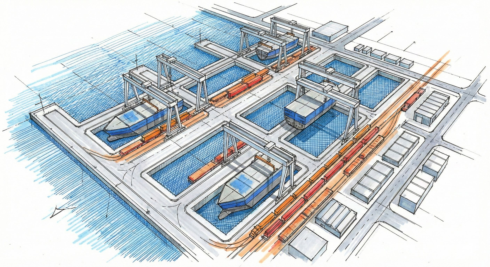
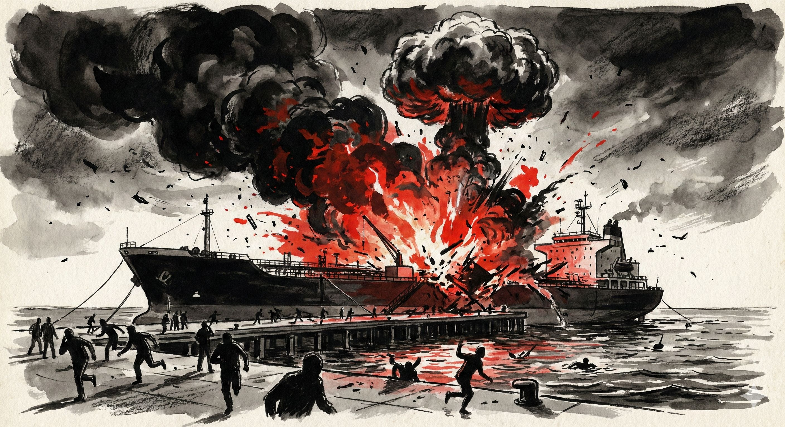

為什麼老船無處拆？
佈滿鏽蝕痕跡的老船，
曾是馳騁於大海的一方霸主。
但在國際配額限縮的大浪拍打下，
只能在港邊搖擺，
等待著拆解之日的到來。
老船拆除卻成了過街老鼠，
海上「遺產」誰負責？

現在發生了什麼事？這些船為何會留在港裡？
又為什麼這件事不只是景觀問題，而是環境、管理與產業轉型的交叉議題？
高雄港部分水域停泊著多艘老舊遠洋漁船。有些仍在等待出售，有些已進入拆解程序，也有一些長期閒置，幾乎沒有人再使用。
船體長年泡在海水中，鏽蝕不斷擴散；油料殘留、塗料剝落與廢棄零件，也讓港灣環境承受更高壓力。


為了提供離漁誘因，漁業署自民國 113 年起啟動「遠洋大型鮪延繩釣及魷釣漁船專案收購計畫」
預計在 116 年底前，
以每噸新臺幣 6 萬元 收購大釣漁船、每船新臺幣 2,100 萬元 收購魷釣漁船
目標是讓 80 艘 老船（大釣 60 艘、魷釣 20 艘）正式退場。


這 80 艘曾在大海拚搏的勇士，
轉身之後面對的是國內傳統拆船業因高污染、工安事件而全數退場的荒蕪現況。
在拆船專區尚未成形的尷尬期，拆船彷彿成了過街老鼠。
那些無處可去、等待著命運終點的老船，
如今塞滿了前鎮漁港，在潮汐與日落中，留下了港灣最沉默的背影。
遠洋漁業不只面臨船隻老化，更受到國際區域漁業管理組織（RFMOs）配額銳減的直接衝擊。船隊規模遠超負荷，形成僧多粥少的困境，這也是許多漁船選擇留在港內的致命傷。
| 核心洋區 / 魚種 | 現有船隊 | 國際現況與配額緊箍咒 | 產業現場的「生存危機」 |
|---|---|---|---|
|
印度洋大釣漁船
(大目鮪)
|
145 艘 | IOTC 第 23/04 號決議： 國家配額自 35,000 公噸銳減至 11,488 公噸。 |
「僧多粥少」最嚴重的海域。 配額縮減近 67%，船隊規模遠超配額負荷，漁船無法獲得充分配額維持營運。 |
|
太平洋大釣漁船
(大目鮪)
|
88 艘 | 配額限制為 10,481 公噸。 | 配額與大西洋、印度洋相去無幾，船隊勉強在有限配額內維持維運。 |
|
大西洋大釣漁船
(大目鮪)
|
84 艘 | 國家配額限制在 9,226 公噸。 | 配額同樣處於低檔，總量受制於國際區域漁業管理組織 (RFMOs) 的永續前提。 |
|
西南大西洋魷魚
(阿根廷魷魚)
|
僅約 70 餘艘 前往作業 |
高度依賴福克蘭群島漁業合作執照， 每年約 20 艘漁船無法取得資格。 |
「季節性賦閒」與衍生管理危機。 這 20 艘未獲執照的船隻被迫在上半年留在高雄港整補，等候下半年的秋刀魚季，面臨嚴重的船員管理與補充難題。 |
|
北太平洋秋刀魚
(秋刀魚)
|
近 10 年平均 89 艘作業 111 年降至 81 艘 |
近 3 年秋刀魚漁況以 30% 以上的幅度持續衰退。 | 「內捲與躺平危機」。 船隻數量過量跡象明確，111 年有近 10 艘漁船寧可在高雄港「賦閒躺平」，也不願冒著承受虧損的風險出海。 |
1986年8月11日上午11時40分，
位於小港的大仁宮拆船碼頭傳出爆炸聲響，造成多人死傷，
更震出了早期拆船業在工安與環保意識未抬頭時，
當時的拆船業是在火光與鋼鐵間肉身搏命，
現場的工人、周圍的居民如同坐在不知何時會引爆的火藥庫上，
也為這個產業鳴起終曲的汽笛聲。
1980年代大仁宮爆炸案目擊居民說法
政府已經動 23.7 億元補助老舊遠洋漁船汰除，但國內合法且具綠色認證的拆船廠寥寥無幾，加上地方居民對工安與環境汙染的憤怒，沒有合法、且符合現代環保標準的拆船場域，成為政策推行最大的礁石。
中央管核准、地方管污染。海岸線旁則是業者順著潮汐，將巨輪拉上「半陸半海」的尷尬灘岸，在各機關的管理盲區裡，一條潮線，割裂了工安與環境監督，讓這場轉型必經的拆解工程，成了誰都能管、卻誰都沒在管的體制真空。
台灣能造出遨遊三大洋的萬噸巨輪、名震國際的頂級遊艇，卻在產業藍圖的最後一哩路上留下了空白。當國際配額的限縮迎來集體大減船潮，這個長年「只管建、不管拆」的殘缺產業鏈終於引來反噬，在滿載的季節，滿滿地卡死了前鎮漁港。
旗津不能拆，前鎮放不下。
為了打破這個僵局，農業部漁業署在取得經濟部同意後報請行政院，將目光投向了遙遠的北高雄茄萣，
原本預定作為國家離岸風電與高科技海洋產業園區的「興達海基」，
2025年10月行政院專案核定，將興達海基作為「暫時性、臨時性」的拆船場域，
避開人口稠密區，並配合收購計畫將無處可去的老船汰除解體，再將土地收回。
這場由上而下的引渡計畫，卻意外點燃了茄萣居民高分貝的怒火，
案子在地方議員與民眾的強烈質疑下，再度重新回到原點。
▲ 茄萣居民與地方民代召開公聽會強烈反對訴求
這場政策對撞，戳破了台灣環境治理最諷刺的現實：
體制的真空，並不會因為換了一個港灣就自動消失。
中央只要造船公司具有拆船營業項目就核准發照，
後續卻缺乏對每一家業者污染防治的實質監督。
茄萣居民很清楚，在缺乏嚴格監督機制的專案下，
那條在旗津「半陸半海、同步污染土地與海洋」的潮線，
隨時會在興達港的海岸線上複製。
台灣身為遠洋捕撈大國，長年征戰三大洋，但近年來，兩股來自國際社會的隱形巨浪正迎面撲來。
第一股浪，是日益嚴苛的海上勞工人權規範與國際設備標準，那些設備跟不上時代的小型漁船，首先面臨了被時代淘汰的命運。
而真正將台灣大型「鮪延繩釣船隊」逼入絕境的第二股浪，是殘酷的國際配額重整。
在各個大洋區中，台灣船隊受制最嚴重的物種，正是高經濟價值的大目鮪。
前兩年在印度洋的國際諮商會議上，一紙名為保育、實為資源搶奪的決議案通過，台灣分到的國家配額瞬間被「限縮了將近三分之二」，只剩下原本的三分之一、一萬多公噸。
「海上的資源是固定的，當分到的食物只剩三分之一，如果船隊規模不變，下場就是集體餓死，甚至因為超額捕撈而面臨國際違規重罰。」
這就是漁業署動支數十億預算、被迫啟動減船計畫的真實原因。
政府必須像外科手術一樣，透過收購、汰除部分的漁船，把活生生的船隻拉回故鄉「安樂死」，好把省下來的稀缺配額，留給其餘倖存的漁船，讓它們在海上有足夠的作業空間與盈利可能。
這場危機還暴露了另一個早期經營漁業時，從未想過的隱形漏洞——船體建材的環保代價。
隨著《國際海事公約》的推進，全球船舶正逐步被要求必須符合友善環境、便於回收的現代標準。這項高標準過去主要針對利潤高、體積大的大型商船，如今，這面綠色法規的高牆，也開始朝向遠洋漁船逼近。
「早期我們造船，只求它能抗風浪、能裝載滿滿的漁獲，誰會去考慮幾十年後，這些材料要怎麼環保回收？」
就像開著一輛沒有環保材質思維的老爺車，到了生命暮年，那些殘留的廢油、石棉與舊建材，全部變成了巨大的回收成本。以台灣目前的產業規模與低迷的利潤來看，不論是底層的漁民還是風雨飄搖的拆船業者，都根本無力獨自承擔這筆高昂的環保代價。
老漁船轉型高科技、友善作業環境的路上，成本已經壓得漁民喘不過氣。如果政府不提供足夠的誘因、不出面吸收這些歷史遺留的汰舊成本，漁民勢必寸步難行。
減船計畫是為了讓遠洋漁業活下去的必要之惡，但「叫船回來」之後的配套，中央卻留下了空白。
面對前一陣子旗津、前鎮與茄萣地方居民對工安與環境污染的強烈反彈，執行單位也只能無奈地表示，正在積極傾聽地方的聲音、持續做艱難的溝通。
這是一條漫長、需要極大耐心的轉型長路。台灣遠洋漁業必須從傳統的粗放作業，走向高科技、符合國際規範且具備盈利空間的全新模式。
而在這場痛苦的集體轉型中，如何幫這群立過汗馬功勞、帶著國際判決書歸來的老舊漁船，在遠離民居的岸邊，找到一個符合環保公安、能體面且盡快汰除的適當產地，成了 2026 年（民國 115 年）台灣高港最具燃眉之急的終極考卷。
當一艘遠洋漁船結束數十年的航程，等待它的本該是一場安全、合法且完整的退場機制。然而在台灣，老舊船舶的去處，卻成為橫跨產業、環境、地方發展與政策治理的複雜課題。
從遠洋漁業面臨國際規範壓力，到拆船產業逐漸式微；從港區空間不足，到地方居民對環境衝擊的擔憂，每一艘停泊在港邊的老船，都映照著台灣海洋產業轉型過程中的矛盾與挑戰。
拆除一艘船或許只需要數個月，但建立一套兼顧產業需求、環境保護與社會共識的制度，卻可能需要更長的時間。
當老船陸續退役，真正需要被重新思考的，不只是船舶的最終歸宿，而是台灣如何在永續與發展之間，找到下一個航向。



